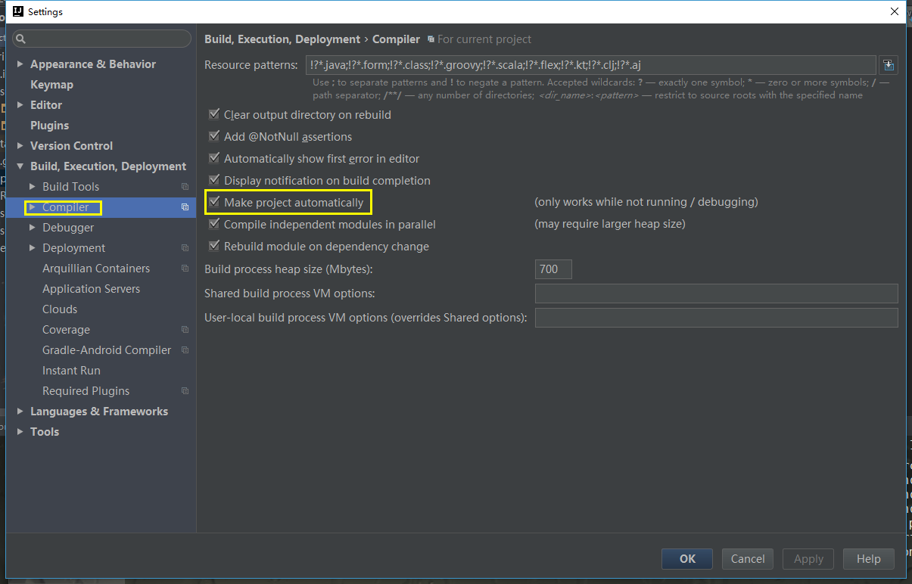
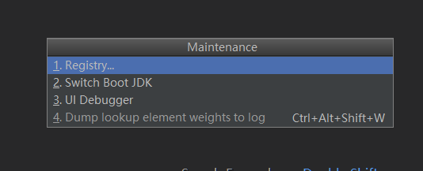
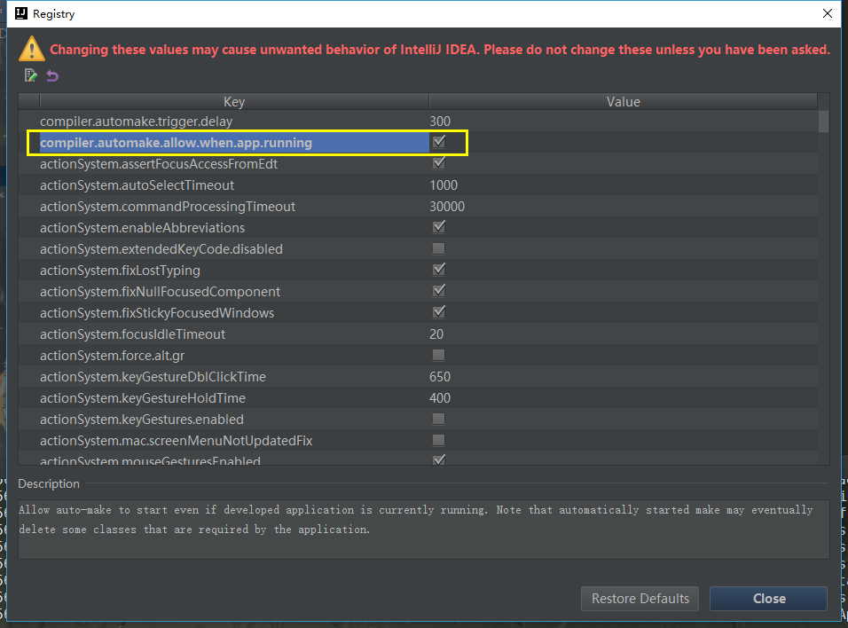

原文出处:本文由博客园博主故事我忘了°提供。
原文连接:https://www.cnblogs.com/jsccc520/p/11979076.html
原文连接:https://www.cnblogs.com/jsccc520/p/11979076.html
个人微信公众号:程序猿的月光宝盒

SpringBoot热部署两种方式
1.SpringLoader 插件
缺点: Java 代码做部署处理。但是对页面无能为力。
2.DevTools 工具
可以全自动化部署
SpringLoader 与 DevTools 的区别：
SpringLoader：在部署项目时使用的是热部署的方式。
DevTools： 在部署项目时使用的是重新部署的方式
第二种准确的说是重新部署,本篇博客主要介绍第二种,所以本文是用"热"
DevTools 工具使用:
在pom文件中添加依赖
<dependency>
<groupId>org.springframework.boot</groupId>
<artifactId>spring-boot-devtools</artifactId>
<optional>true</optional>
</dependency>在eclipse中这样是没问题了,但是博主用的idea(pj的,emmm),发现没用哦,然后又baidu+google了一波
最终成功,解决方案如下:

然后 Shift+Ctrl+Alt+/，选择Registry

进去之后，找到如下图所示的选项，打勾

再到配置文件里配置
spring.devtools.restart.poll-interval=3000ms
spring.devtools.restart.quiet-period=2999ms我理解的话就是：DevTools的检测时间和idea的编译所需时间存在差异。在idea还没完成编译工作前，DevTools就开始进行重启和加载，导致@RequestMapping没有被全部正常处理。牺牲一点时间，去加长devtools的轮询时间，增大等待时间
该解决方案来自:
stackoverflow的帖子,点击查看